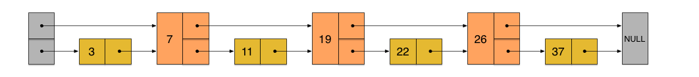
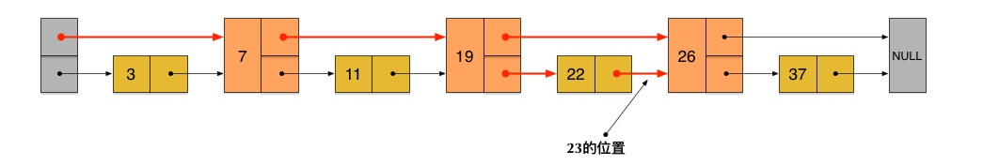
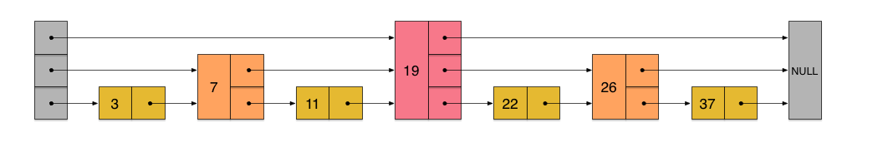
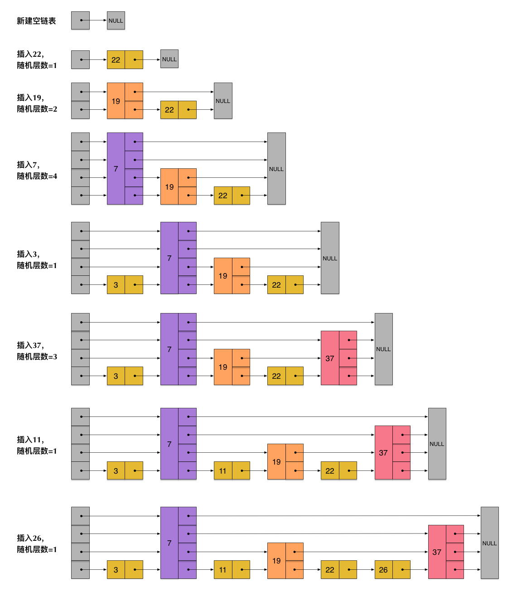
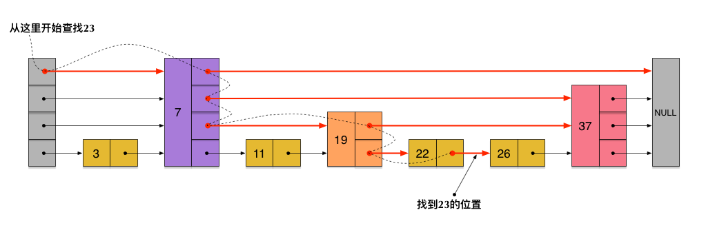
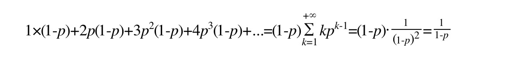
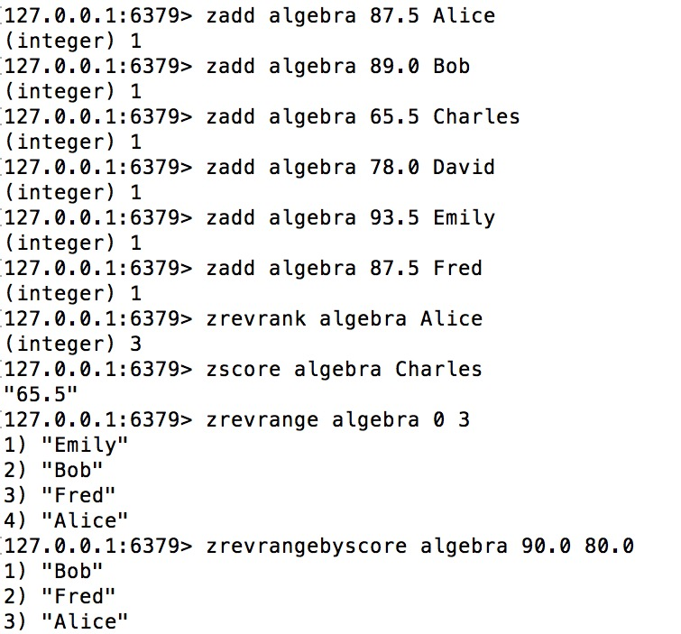
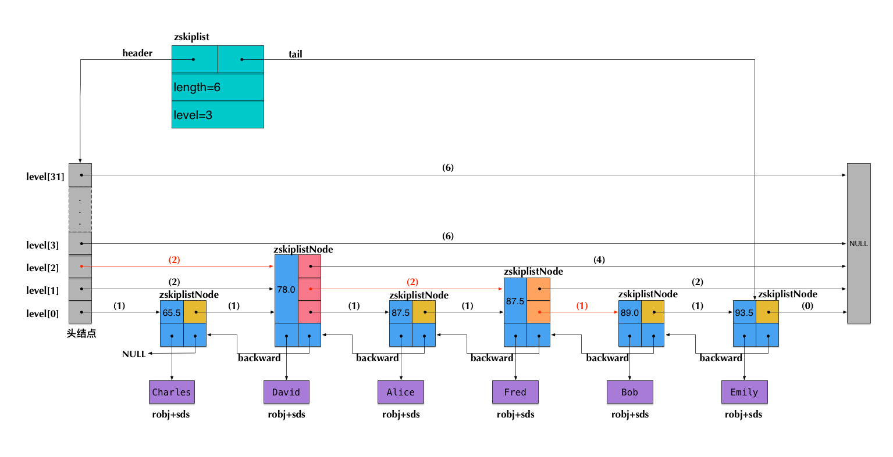

本文是《Redis内部数据结构详解》系列的第六篇。在本文中，我们围绕一个Redis的内部数据结构——skiplist展开讨论。
Redis里面使用skiplist是为了实现sorted set这种对外的数据结构。sorted set提供的操作非常丰富，可以满足非常多的应用场景。这也意味着，sorted set相对来说实现比较复杂。同时，skiplist这种数据结构对于很多人来说都比较陌生，因为大部分学校里的算法课都没有对这种数据结构进行过详细的介绍。因此，为了介绍得足够清楚，本文会比这个系列的其它几篇花费更多的篇幅。
我们将大体分成三个部分进行介绍：
- 介绍经典的
skiplist数据结构，并进行简单的算法分析。这一部分的介绍，与Redis没有直接关系。我会尝试尽量使用通俗易懂的语言进行描述。 - 讨论Redis里的
skiplist的具体实现。为了支持sorted set本身的一些要求，在经典的skiplist基础上，Redis里的相应实现做了若干改动。 - 讨论sorted set是如何在
skiplist, dict和ziplist基础上构建起来的。
我们在讨论中还会涉及到两个Redis配置（在redis.conf中的ADVANCED CONFIG部分）：
1 | zset-max-ziplist-entries 128 |
我们在讨论中会详细解释这两个配置的含义。
注：本文讨论的代码实现基于Redis源码的3.2分支。
skiplist数据结构简介
skiplist本质上也是一种查找结构，用于解决算法中的查找问题（Searching），即根据给定的key，快速查到它所在的位置（或者对应的value）。
我们在《Redis内部数据结构详解》系列的第一篇中介绍dict的时候，曾经讨论过：一般查找问题的解法分为两个大类：一个是基于各种平衡树，一个是基于哈希表。但skiplist却比较特殊，它没法归属到这两大类里面。
这种数据结构是由William Pugh发明的，最早出现于他在1990年发表的论文《Skip Lists: A Probabilistic Alternative to Balanced Trees》。对细节感兴趣的同学可以下载论文原文来阅读。
skiplist，顾名思义，首先它是一个list。实际上，它是在有序链表的基础上发展起来的。
我们先来看一个有序链表，如下图（最左侧的灰色节点表示一个空的头结点）：
在这样一个链表中，如果我们要查找某个数据，那么需要从头开始逐个进行比较，直到找到包含数据的那个节点，或者找到第一个比给定数据大的节点为止（没找到）。也就是说，时间复杂度为O(n)。同样，当我们要插入新数据的时候，也要经历同样的查找过程，从而确定插入位置。
假如我们每相邻两个节点增加一个指针，让指针指向下下个节点，如下图：

这样所有新增加的指针连成了一个新的链表，但它包含的节点个数只有原来的一半（上图中是7, 19, 26）。现在当我们想查找数据的时候，可以先沿着这个新链表进行查找。当碰到比待查数据大的节点时，再回到原来的链表中进行查找。比如，我们想查找23，查找的路径是沿着下图中标红的指针所指向的方向进行的：

- 23首先和7比较，再和19比较，比它们都大，继续向后比较。
- 但23和26比较的时候，比26要小，因此回到下面的链表（原链表），与22比较。
- 23比22要大，沿下面的指针继续向后和26比较。23比26小，说明待查数据23在原链表中不存在，而且它的插入位置应该在22和26之间。
在这个查找过程中，由于新增加的指针，我们不再需要与链表中每个节点逐个进行比较了。需要比较的节点数大概只有原来的一半。
利用同样的方式，我们可以在上层新产生的链表上，继续为每相邻的两个节点增加一个指针，从而产生第三层链表。如下图：

在这个新的三层链表结构上，如果我们还是查找23，那么沿着最上层链表首先要比较的是19，发现23比19大，接下来我们就知道只需要到19的后面去继续查找，从而一下子跳过了19前面的所有节点。可以想象，当链表足够长的时候，这种多层链表的查找方式能让我们跳过很多下层节点，大大加快查找的速度。
skiplist正是受这种多层链表的想法的启发而设计出来的。实际上，按照上面生成链表的方式，上面每一层链表的节点个数，是下面一层的节点个数的一半，这样查找过程就非常类似于一个二分查找，使得查找的时间复杂度可以降低到O(log n)。但是，这种方法在插入数据的时候有很大的问题。新插入一个节点之后，就会打乱上下相邻两层链表上节点个数严格的2:1的对应关系。如果要维持这种对应关系，就必须把新插入的节点后面的所有节点（也包括新插入的节点）重新进行调整，这会让时间复杂度重新蜕化成O(n)。删除数据也有同样的问题。
skiplist为了避免这一问题，它不要求上下相邻两层链表之间的节点个数有严格的对应关系，而是为每个节点随机出一个层数(level)。比如，一个节点随机出的层数是3，那么就把它链入到第1层到第3层这三层链表中。为了表达清楚，下图展示了如何通过一步步的插入操作从而形成一个skiplist的过程：

从上面skiplist的创建和插入过程可以看出，每一个节点的层数（level）是随机出来的，而且新插入一个节点不会影响其它节点的层数。因此，插入操作只需要修改插入节点前后的指针，而不需要对很多节点都进行调整。这就降低了插入操作的复杂度。实际上，这是skiplist的一个很重要的特性，这让它在插入性能上明显优于平衡树的方案。这在后面我们还会提到。
根据上图中的skiplist结构，我们很容易理解这种数据结构的名字的由来。skiplist，翻译成中文，可以翻译成“跳表”或“跳跃表”，指的就是除了最下面第1层链表之外，它会产生若干层稀疏的链表，这些链表里面的指针故意跳过了一些节点（而且越高层的链表跳过的节点越多）。这就使得我们在查找数据的时候能够先在高层的链表中进行查找，然后逐层降低，最终降到第1层链表来精确地确定数据位置。在这个过程中，我们跳过了一些节点，从而也就加快了查找速度。
刚刚创建的这个skiplist总共包含4层链表，现在假设我们在它里面依然查找23，下图给出了查找路径：

需要注意的是，前面演示的各个节点的插入过程，实际上在插入之前也要先经历一个类似的查找过程，在确定插入位置后，再完成插入操作。
至此，skiplist的查找和插入操作，我们已经很清楚了。而删除操作与插入操作类似，我们也很容易想象出来。这些操作我们也应该能很容易地用代码实现出来。
当然，实际应用中的skiplist每个节点应该包含key和value两部分。前面的描述中我们没有具体区分key和value，但实际上列表中是按照key进行排序的，查找过程也是根据key在比较。
但是，如果你是第一次接触skiplist，那么一定会产生一个疑问：节点插入时随机出一个层数，仅仅依靠这样一个简单的随机数操作而构建出来的多层链表结构，能保证它有一个良好的查找性能吗？为了回答这个疑问，我们需要分析skiplist的统计性能。
在分析之前，我们还需要着重指出的是，执行插入操作时计算随机数的过程，是一个很关键的过程，它对skiplist的统计特性有着很重要的影响。这并不是一个普通的服从均匀分布的随机数，它的计算过程如下：
- 首先，每个节点肯定都有第1层指针（每个节点都在第1层链表里）。
- 如果一个节点有第i层(i>=1)指针（即节点已经在第1层到第i层链表中），那么它有第(i+1)层指针的概率为p。
- 节点最大的层数不允许超过一个最大值，记为MaxLevel。
这个计算随机层数的伪码如下所示：
1 | randomLevel() |
randomLevel()的伪码中包含两个参数，一个是p，一个是MaxLevel。在Redis的skiplist实现中，这两个参数的取值为：
1 | p = 1/4 |
skiplist的算法性能分析
在这一部分，我们来简单分析一下skiplist的时间复杂度和空间复杂度，以便对于skiplist的性能有一个直观的了解。如果你不是特别偏执于算法的性能分析，那么可以暂时跳过这一小节的内容。
我们先来计算一下每个节点所包含的平均指针数目（概率期望）。节点包含的指针数目，相当于这个算法在空间上的额外开销(overhead)，可以用来度量空间复杂度。
根据前面randomLevel()的伪码，我们很容易看出，产生越高的节点层数，概率越低。定量的分析如下：
- 节点层数至少为1。而大于1的节点层数，满足一个概率分布。
- 节点层数恰好等于1的概率为1-p。
- 节点层数大于等于2的概率为p，而节点层数恰好等于2的概率为p(1-p)。
- 节点层数大于等于3的概率为p2，而节点层数恰好等于3的概率为p2(1-p)。
- 节点层数大于等于4的概率为p3，而节点层数恰好等于4的概率为p3(1-p)。
- ……
因此，一个节点的平均层数（也即包含的平均指针数目），计算如下：

现在很容易计算出：
- 当p=1/2时，每个节点所包含的平均指针数目为2；
- 当p=1/4时，每个节点所包含的平均指针数目为1.33。这也是Redis里的skiplist实现在空间上的开销。
接下来，为了分析时间复杂度，我们计算一下skiplist的平均查找长度。查找长度指的是查找路径上跨越的跳数，而查找过程中的比较次数就等于查找长度加1。以前面图中标出的查找23的查找路径为例，从左上角的头结点开始，一直到结点22，查找长度为6。
为了计算查找长度，这里我们需要利用一点小技巧。我们注意到，每个节点插入的时候，它的层数是由随机函数randomLevel()计算出来的，而且随机的计算不依赖于其它节点，每次插入过程都是完全独立的。所以，从统计上来说，一个skiplist结构的形成与节点的插入顺序无关。
这样的话，为了计算查找长度，我们可以将查找过程倒过来看，从右下方第1层上最后到达的那个节点开始，沿着查找路径向左向上回溯，类似于爬楼梯的过程。我们假设当回溯到某个节点的时候，它才被插入，这虽然相当于改变了节点的插入顺序，但从统计上不影响整个skiplist的形成结构。
现在假设我们从一个层数为i的节点x出发，需要向左向上攀爬k层。这时我们有两种可能：
- 如果节点x有第(i+1)层指针，那么我们需要向上走。这种情况概率为p。
- 如果节点x没有第(i+1)层指针，那么我们需要向左走。这种情况概率为(1-p)。
这两种情形如下图所示：

用C(k)表示向上攀爬k个层级所需要走过的平均查找路径长度（概率期望），那么：
1 | C(0)=0 |
代入，得到一个差分方程并化简：
1 | C(k)=(1-p)(C(k)+1) + p(C(k-1)+1) |
这个结果的意思是，我们每爬升1个层级，需要在查找路径上走1/p步。而我们总共需要攀爬的层级数等于整个skiplist的总层数-1。
那么接下来我们需要分析一下当skiplist中有n个节点的时候，它的总层数的概率均值是多少。这个问题直观上比较好理解。根据节点的层数随机算法，容易得出：
- 第1层链表固定有n个节点；
- 第2层链表平均有n*p个节点；
- 第3层链表平均有n*p2个节点；
- …
所以，从第1层到最高层，各层链表的平均节点数是一个指数递减的等比数列。容易推算出，总层数的均值为log1/pn，而最高层的平均节点数为1/p。
综上，粗略来计算的话，平均查找长度约等于：
- C(log1/pn-1)=(log1/pn-1)/p
即，平均时间复杂度为O(log n)。
当然，这里的时间复杂度分析还是比较粗略的。比如，沿着查找路径向左向上回溯的时候，可能先到达左侧头结点，然后沿头结点一路向上；还可能先到达最高层的节点，然后沿着最高层链表一路向左。但这些细节不影响平均时间复杂度的最后结果。另外，这里给出的时间复杂度只是一个概率平均值，但实际上计算一个精细的概率分布也是有可能的。详情还请参见William Pugh的论文《Skip Lists: A Probabilistic Alternative to Balanced Trees》。
skiplist与平衡树、哈希表的比较
skiplist和各种平衡树（如AVL、红黑树等）的元素是有序排列的，而哈希表不是有序的。因此，在哈希表上只能做单个key的查找，不适宜做范围查找。所谓范围查找，指的是查找那些大小在指定的两个值之间的所有节点。- 在做范围查找的时候，平衡树比skiplist操作要复杂。在平衡树上，我们找到指定范围的小值之后，还需要以中序遍历的顺序继续寻找其它不超过大值的节点。如果不对平衡树进行一定的改造，这里的中序遍历并不容易实现。而在
skiplist上进行范围查找就非常简单，只需要在找到小值之后，对第1层链表进行若干步的遍历就可以实现。 - 平衡树的插入和删除操作可能引发子树的调整，逻辑复杂，而
skiplist的插入和删除只需要修改相邻节点的指针，操作简单又快速。 - 从内存占用上来说，
skiplist比平衡树更灵活一些。一般来说，平衡树每个节点包含2个指针（分别指向左右子树），而skiplist每个节点包含的指针数目平均为1/(1-p)，具体取决于参数p的大小。如果像Redis里的实现一样，取p=1/4，那么平均每个节点包含1.33个指针，比平衡树更有优势。 - 查找单个key，skiplist和平衡树的时间复杂度都为O(log n)，大体相当；而哈希表在保持较低的哈希值冲突概率的前提下，查找时间复杂度接近O(1)，性能更高一些。所以我们平常使用的各种Map或dictionary结构，大都是基于哈希表实现的。
- 从算法实现难度上来比较，skiplist比平衡树要简单得多。
Redis中的skiplist实现
在这一部分，我们讨论Redis中的skiplist实现。
在Redis中，skiplist被用于实现暴露给外部的一个数据结构：sorted set。准确地说，sorted set底层不仅仅使用了skiplist，还使用了ziplist和dict。这几个数据结构的关系，我们下一章再讨论。现在，我们先花点时间把sorted set的关键命令看一下。这些命令对于Redis里skiplist的实现，有重要的影响。
sorted set的命令举例
sorted set是一个有序的数据集合，对于像类似排行榜这样的应用场景特别适合。
现在我们来看一个例子，用sorted set来存储代数课（algebra）的成绩表。原始数据如下：
- Alice 87.5
- Bob 89.0
- Charles 65.5
- David 78.0
- Emily 93.5
- Fred 87.5
这份数据给出了每位同学的名字和分数。下面我们将这份数据存储到sorted set里面去：
[
对于上面的这些命令，我们需要的注意的地方包括：
- 前面的6个
zadd命令，将6位同学的名字和分数(score)都输入到一个key值为algebra的sorted set里面了。注意Alice和Fred的分数相同，都是87.5分。 zrevrank命令查询Alice的排名（命令中的rev表示按照倒序排列，也就是从大到小），返回3。排在Alice前面的分别是Emily、Bob、Fred，而排名(rank)从0开始计数，所以Alice的排名是3。注意，其实Alice和Fred的分数相同，这种情况下sorted set会把分数相同的元素，按照字典顺序来排列。按照倒序，Fred排在了Alice的前面。zscore命令查询了Charles对应的分数。zrevrange命令查询了从大到小排名为0~3的4位同学。zrevrangebyscore命令查询了分数在80.0和90.0之间的所有同学，并按分数从大到小排列。
总结一下，sorted set中的每个元素主要表现出3个属性：
- 数据本身（在前面的例子中我们把名字存成了数据）。
- 每个数据对应一个分数(score)。
- 根据分数大小和数据本身的字典排序，每个数据会产生一个排名(rank)。可以按正序或倒序。
Redis中skiplist实现的特殊性
我们简单分析一下前面出现的几个查询命令：
- zrevrank由数据查询它对应的排名，这在前面介绍的skiplist中并不支持。
- zscore由数据查询它对应的分数，这也不是skiplist所支持的。
- zrevrange根据一个排名范围，查询排名在这个范围内的数据。这在前面介绍的skiplist中也不支持。
- zrevrangebyscore根据分数区间查询数据集合，是一个skiplist所支持的典型的范围查找（score相当于key）。
实际上，Redis中sorted set的实现是这样的：
- 当数据较少时，sorted set是由一个
ziplist来实现的。 - 当数据多的时候，sorted set是由
一个dict + 一个skiplist来实现的。简单来讲，dict用来查询数据到分数的对应关系，而skiplist用来根据分数查询数据（可能是范围查找）。
这里sorted set的构成我们在下一章还会再详细地讨论。现在我们集中精力来看一下sorted set与skiplist的关系，：
- zscore的查询，不是由skiplist来提供的，而是由那个dict来提供的。
- 为了支持排名(rank)，Redis里对skiplist做了扩展，使得根据排名能够快速查到数据，或者根据分数查到数据之后，也同时很容易获得排名。而且，根据排名的查找，时间复杂度也为O(log n)。
- zrevrange的查询，是根据排名查数据，由扩展后的skiplist来提供。
- zrevrank是先在dict中由数据查到分数，再拿分数到skiplist中去查找，查到后也同时获得了排名。
前述的查询过程，也暗示了各个操作的时间复杂度：
- zscore只用查询一个dict，所以时间复杂度为O(1)
- zrevrank, zrevrange, zrevrangebyscore由于要查询skiplist，所以zrevrank的时间复杂度为O(log n)，而zrevrange, zrevrangebyscore的时间复杂度为O(log(n)+M)，其中M是当前查询返回的元素个数。
总结起来，Redis中的skiplist跟前面介绍的经典的skiplist相比，有如下不同：
- 分数(score)允许重复，即skiplist的key允许重复。这在最开始介绍的经典skiplist中是不允许的。
- 在比较时，不仅比较分数（相当于skiplist的key），还比较数据本身。在Redis的skiplist实现中，数据本身的内容唯一标识这份数据，而不是由key来唯一标识。另外，当多个元素分数相同的时候，还需要根据数据内容来进字典排序。
- 第1层链表不是一个单向链表，而是一个双向链表。这是为了方便以倒序方式获取一个范围内的元素。
- 在skiplist中可以很方便地计算出每个元素的排名(rank)。
skiplist的数据结构定义
1 |
|
这段代码出自server.h，我们来简要分析一下：
- 开头定义了两个常量，ZSKIPLIST_MAXLEVEL和ZSKIPLIST_P，分别对应我们前面讲到的skiplist的两个参数：一个是MaxLevel，一个是p。
- zskiplistNode定义了skiplist的节点结构。
- obj字段存放的是节点数据，它的类型是一个string robj。本来一个string robj可能存放的不是sds，而是long型，但zadd命令在将数据插入到skiplist里面之前先进行了解码，所以这里的obj字段里存储的一定是一个sds。有关robj的详情可以参见系列文章的第三篇：《Redis内部数据结构详解(3)——robj》。这样做的目的应该是为了方便在查找的时候对数据进行字典序的比较，而且，skiplist里的数据部分是数字的可能性也比较小。
- score字段是数据对应的分数。
- backward字段是指向链表前一个节点的指针（前向指针）。节点只有1个前向指针，所以只有第1层链表是一个双向链表。
- level[]存放指向各层链表后一个节点的指针（后向指针）。每层对应1个后向指针，用forward字段表示。另外，每个后向指针还对应了一个span值，它表示当前的指针跨越了多少个节点。span用于计算元素排名(rank)，这正是前面我们提到的Redis对于skiplist所做的一个扩展。需要注意的是，level[]是一个柔性数组（flexible array member），因此它占用的内存不在zskiplistNode结构里面，而需要插入节点的时候单独为它分配。也正因为如此，skiplist的每个节点所包含的指针数目才是不固定的，我们前面分析过的结论——skiplist每个节点包含的指针数目平均为1/(1-p)——才能有意义。
- zskiplist定义了真正的skiplist结构，它包含：
- 头指针header和尾指针tail。
- 链表长度length，即链表包含的节点总数。注意，新创建的skiplist包含一个空的头指针，这个头指针不包含在length计数中。
- level表示skiplist的总层数，即所有节点层数的最大值。
下图以前面插入的代数课成绩表为例，展示了Redis中一个skiplist的可能结构：

注意：图中前向指针上面括号中的数字，表示对应的span的值。即当前指针跨越了多少个节点，这个计数不包括指针的起点节点，但包括指针的终点节点。
假设我们在这个skiplist中查找score=89.0的元素（即Bob的成绩数据），在查找路径中，我们会跨域图中标红的指针，这些指针上面的span值累加起来，就得到了Bob的排名(2+2+1)-1=4（减1是因为rank值以0起始）。需要注意这里算的是从小到大的排名，而如果要算从大到小的排名，只需要用skiplist长度减去查找路径上的span累加值，即6-(2+2+1)=1。
可见，在查找skiplist的过程中，通过累加span值的方式，我们就能很容易算出排名。相反，如果指定排名来查找数据（类似zrange和zrevrange那样），也可以不断累加span并时刻保持累加值不超过指定的排名，通过这种方式就能得到一条O(log n)的查找路径。
Redis中的sorted set
我们前面提到过，Redis中的sorted set，是在skiplist, dict和ziplist基础上构建起来的:
- 当数据较少时，sorted set是由一个
ziplist来实现的。 - 当数据多的时候，sorted set是由一个叫zset的数据结构来实现的，这个zset包含一个
dict + 一个skiplist。dict用来查询数据到分数(score)的对应关系，而skiplist用来根据分数查询数据（可能是范围查找）。
在这里我们先来讨论一下前一种情况——基于ziplist实现的sorted set。在本系列前面关于ziplist的文章里，我们介绍过，ziplist就是由很多数据项组成的一大块连续内存。由于sorted set的每一项元素都由数据和score组成，因此，当使用zadd命令插入一个(数据, score)对的时候，底层在相应的ziplist上就插入两个数据项：数据在前，score在后。
ziplist的主要优点是节省内存，但它上面的查找操作只能按顺序查找（可以正序也可以倒序）。因此，sorted set的各个查询操作，就是在ziplist上从前向后（或从后向前）一步步查找，每一步前进两个数据项，跨域一个(数据, score)对。
随着数据的插入，sorted set底层的这个ziplist就可能会转成zset的实现（转换过程详见t_zset.c的zsetConvert）。那么到底插入多少才会转呢？
还记得本文开头提到的两个Redis配置吗？
1 | zset-max-ziplist-entries 128 |
这个配置的意思是说，在如下两个条件之一满足的时候，ziplist会转成zset（具体的触发条件参见t_zset.c中的zaddGenericCommand相关代码）：
- 当sorted set中的元素个数，即(数据, score)对的数目超过128的时候，也就是ziplist数据项超过256的时候。
- 当sorted set中插入的任意一个数据的长度超过了64的时候。
最后，zset结构的代码定义如下：
1 | typedef struct zset { |
Redis为什么用skiplist而不用平衡树？
在前面我们对于skiplist和平衡树、哈希表的比较中，其实已经不难看出Redis里使用skiplist而不用平衡树的原因了。现在我们看看，对于这个问题，Redis的作者 @antirez 是怎么说的：
There are a few reasons:
1) They are not very memory intensive. It’s up to you basically. Changing parameters about the probability of a node to have a given number of levels will make then less memory intensive than btrees.
2) A sorted set is often target of many ZRANGE or ZREVRANGE operations, that is, traversing the skip list as a linked list. With this operation the cache locality of skip lists is at least as good as with other kind of balanced trees.
3) They are simpler to implement, debug, and so forth. For instance thanks to the skip list simplicity I received a patch (already in Redis master) with augmented skip lists implementing ZRANK in O(log(N)). It required little changes to the code.
这段话原文出处：
这里从内存占用、对范围查找的支持和实现难易程度这三方面总结的原因，我们在前面其实也都涉及到了。
系列下一篇我们将介绍intset，以及它与Redis对外暴露的数据类型set的关系，敬请期待。
其它精选文章：
- Redis内部数据结构详解(5)——quicklist
- Redis内部数据结构详解(4)——ziplist
- Redis内部数据结构详解(3)——robj
- Redis内部数据结构详解(2)——sds
- Redis内部数据结构详解(1)——dict
- 你需要了解深度学习和神经网络这项技术吗？
- 技术的正宗与野路子
- 论人生之转折
- 编程世界的熵增原理
- Android端外推送到底有多烦？
- Android和iOS开发中的异步处理（四）——异步任务和队列
- 用树型模型管理App数字和红点提示
原创文章，转载请注明出处，并包含下面的二维码！否则拒绝转载！
http://zhangtielei.com/posts/blog-redis-skiplist.html